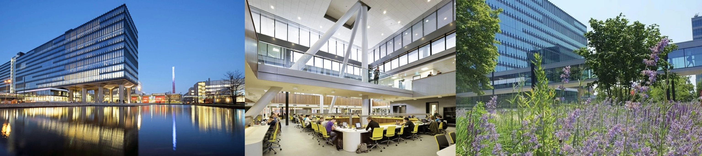
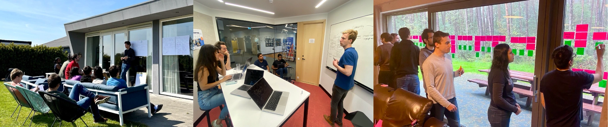
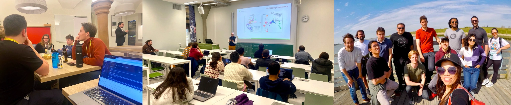

Join us!

Current openings (7)
We currently have room for seven outstanding machine learning Ph.D. students, PostDocs, and Engineers. The vacancies will remain open until the positions are filled. Apply now!
PhD in Open-Source Foundation Models (2 positions - Offline now, please check back early January!)
Join a groundbreaking project to develop a next-generation, open-source family of foundation models. We are seeking a proficient and talented PhD student with a true passion for AI. You will play a pivotal role in a team exploring new large model architectures, novel efficient finetuning and adaptation techniques, refining data to enhance learning and generalizability, creating benchmarks, and ensuring AI safety. [4 year position]
Postdoctoral Fellow in Open-Source Foundation Models (2 positions - Offline now, please check back early January!)
Join a groundbreaking project to develop a next-generation, open-source family of foundation models. We are seeking a proficient and talented researcher who is passionate about large models and learning to learn. You will play a pivotal role in a team exploring new model architectures, novel efficient finetuning and adaptation techniques, refining data to enhance learning and generalizability, creating benchmarks, and ensuring AI safety. [3 year position]
Postdoctoral Fellow in Automated Machine Learning for Safe AI (Offline now, please check back early January!)
We are seeking a passionate and talented research Scientist to lead the development of an AutoML platform that integrates cutting-edge machine learning techniques with natural language interfaces. You will work closely with an exceptional team of engineers and researchers to design a system that makes AI more accessible, impactful, and responsible. [2 year position]
PostDoc/Expert in AI-driven innovation (Offline now, please check back early January!)
Looking to make real-world impact with AI? We’re hiring a AI expert to help companies in the Netherlands unlock AI’s potential! Join our cutting-edge lab, collaborate with businesses, and co-create solutions that drive innovation, sustainability, and real-world impact. [1 year position]
Research Engineer in Open-Source Foundation Models
We are looking for an exceptional research engineer with a passion for AI and open-source development. In this role, you will design and build cutting-edge tools and software that will shape the future of foundation models, used by millions of people worldwide. [3 year position]
You can also check out other positions in our department.
Who we are looking for
We are seeking exceptional individuals who aspire to leave a mark on the world of machine learning and push humanity forward
- Fearless Explorers: Visionaries who dare to think big, embrace curiosity, and thrive on pushing the boundaries of innovation.
- Dedicated Builders: Innovators who turn ambitious ideas into reality, creating solutions with real-world impact.
- Empowered Leaders: Changemakers ready to unlock their full potential, inspire others, and define the future of machine learning.
We especially appreciate people who are curious and open-minded, self-driven and collaborative, kind and respectful, and who contribute to our shared passion for research and exploration. If you’re passionate about making a difference and pursuing excellence, we want you to be part of our journey.
How we will empower you

We cultivate an environment that inspires and supports world-class research. Our focus is on quality over quantity, encouraging innovative, blue-sky thinking while embracing openness, transparency, and learning from mistakes. Above all, we prioritize an excellent work-life balance, with minimal meetings, plenty of time for focused work, and numerous opportunities to learn and collaborate with one another.
Fully Funded for Success
All positions are fully funded, so you can focus entirely on your research and growth. PhD positions are always funded for 4 years. PostDoc and Research Engineer positions are usually for 2-4 years, with possibilities for extension.
World-leading research
We change the world, together. We’re a tight-knit team of about 20 PhD’s, postdocs, and engineers working together to create real impact. You can find our work in top AI conferences and journals, including NeurIPS, ICML, CVPR, JMLR, and TPAMI, and we take pride in good engineering and open science, building AI tools used by hundreds of thousands of people.
Freedom to Study Deeply and Think Big
We don’t just follow trends — we set them. We encourage every team member to become a leading expert, think outside the box, and find novel avenues of research. We work on extremey efficient continual and meta-learning inspired by the human brain, we design AI models that design themselves using AutoML, we build platforms and create standards that enable research that wasn’t possible before, and even create new venues (e.g. NeurIPS Datasets & Benchmarks) to create new incentives and strengthen communities.
Purpose-Driven Research
Your work here will matter. Next to doing transformative fundamental research, we also leverage our insight to tackle real-world problems, in line with AI for good and sustainable development goals.
Excellent Career Prospects
Research labs and employers around the globe recognize the quality of our researchers, and we collaborate extensively with other leading research labs and organizations all over the world, such as Google, HuggingFace, and MLCommons.
